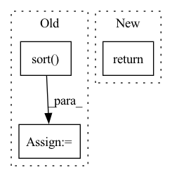

Pattern ID :12990

Before Change
scores_object_based = np.append(arr=scores_of_corrupted_objects, values=score_of_positive)
indice_of_pos_object_based = scores_object_based.size - 1
_, sorted_score_indices_subject_based = torch.sort(torch.tensor(scores_subject_based, dtype=torch.float),
descending=self.kge_to_descend_sorting[
kg_embedding_model.model_name])
sorted_score_indices_subject_based = sorted_score_indices_subject_based.cpu().numpy()
_, sorted_score_indices_object_based = torch.sort(torch.tensor(scores_object_based, dtype=torch.float),
descending=self.kge_to_descend_sorting[
After Change
rank_of_positive_object_based = scores_of_corrupted_objects.shape[0] - \
np.greater(scores_of_corrupted_objects, score_of_positive).sum()
return (
rank_of_positive_subject_based + 1,
rank_of_positive_object_based + 1,
)
In pattern: SUPERPATTERN
Frequency: 4
Non-data size: 3
Instances
Fragment ID: 43768719
Project Name: pykeen/pykeen
Commit Name: d0af5f9478b457b561f9e88d53fbe9a18f1c2672
Time: 2019-05-15
Author: lvermue@users.noreply.github.com
File Name: src/poem/evaluation/ranked_based_evaluator.py
M Class Name: RankBasedEvaluator
N Class Name: RankBasedEvaluator
M Method Name: _compute_rank(6)
N Method Name: _compute_rank(6)
M Parent Class: AbstractEvalutor
N Parent Class: AbstractEvalutor
M File Name: src/poem/evaluation/ranked_based_evaluator.py
N File Name: src/poem/evaluation/ranked_based_evaluator.py
M Start Line: 146
M End Line: 176
N Start Line: 143
N End Line: 157
'>
Before Change
if tensor.numel() < 1 or sparsity <= 0.0 or sparsity > 1.0:
return tensor.new_tensor([])
sorted_vals, _ = torch.sort(tensor.view(-1))
lookup_index = round(sparsity * tensor.numel()) - 1
if lookup_index < 0:
lookup_index = 0
After Change
elif lookup_index > tensor.numel():
lookup_index = tensor.numel()
return memory_aware_threshold(tensor, lookup_index)
def _flatten_and_stack_tensors(self, tensors: List[Tensor]) -> Tensor:
total_elements = sum(tensor.numel() for tensor in tensors)
'>
Fragment ID: 43768726
Project Name: neuralmagic/sparseml
Commit Name: af9f60e67b0685ee080443e65340247398b95ac5
Time: 2022-07-11
Author: eldar.ciki@gmail.com
File Name: src/sparseml/pytorch/sparsification/pruning/mask_creator.py
M Class Name: UnstructuredPruningMaskCreator
N Class Name: UnstructuredPruningMaskCreator
M Method Name: _threshold_from_sparsity(3)
N Method Name: _threshold_from_sparsity(3)
M Parent Class: PruningMaskCreator
N Parent Class: PruningMaskCreator
M File Name: src/sparseml/pytorch/sparsification/pruning/mask_creator.py
N File Name: src/sparseml/pytorch/sparsification/pruning/mask_creator.py
M Start Line: 189
M End Line: 197
N Start Line: 191
N End Line: 197
'>
Before Change
df = self._load_dyna()
// 预测用的过去时间窗口长度 取决于self.config["input_window"]
x_offsets = np.sort(np.concatenate((np.arange(-self.config["input_window"]+1, 1, 1),)))
// 未来时间窗口长度 取决于self.config["output_window"]
y_offsets = np.sort(np.arange(1, self.config["output_window"]+1, 1))
// x: (num_samples, input_length, num_nodes, input_dim)
// y: (num_samples, output_length, num_nodes, output_dim)
After Change
y_val=y_val,
)
self._logger.info("Saved at " + self.cache_file_name)
return x_train, y_train, x_val, y_val, x_test, y_test
def _load_cache_train_val_test(self):
self._logger.info("Loading " + self.cache_file_name)
'>
Fragment ID: 43768710
Project Name: libcity/bigscity-libcity
Commit Name: b9837d163daf079f628c18177c55ffbb9dac504b
Time: 2021-01-30
Author: 35984903+aptx1231@users.noreply.github.com
File Name: trafficdl/data/dataset/traffic_speed_dataset.py
M Class Name: TrafficSpeedDataset
N Class Name: TrafficSpeedDataset
M Method Name: _generate_train_val_test(1)
N Method Name: _generate_train_val_test(1)
M Parent Class: AbstractDataset
N Parent Class: AbstractDataset
M File Name: trafficdl/data/dataset/traffic_speed_dataset.py
N File Name: trafficdl/data/dataset/traffic_speed_dataset.py
M Start Line: 125
M End Line: 165
N Start Line: 148
N End Line: 176
'>
Before Change
z_vals_mid = .5 * (coarse_depth[...,1:] + coarse_depth[...,:-1])
z_samples = sample_pdf(z_vals_mid, weights[...,1:-1], sample_pnum, det=False, pytest=False)
// invTransformSample(cdf, sample_depth, sample_pnum, near, far)
sort_depth, _ = torch.sort(z_samples, dim = -1) // shape (ray_num, sample_pnum)
// Use sort depth to calculate sampled points
raw_pts = rays.repeat(repeats = (1, 1, sample_pnum)).view(rays.shape[0], sample_pnum, -1)
// depth * ray_direction + origin (this should be further tested)
After Change
z_vals_mid = .5 * (coarse_depth[...,1:] + coarse_depth[...,:-1])
z_samples = sample_pdf(z_vals_mid, weights[...,1:-1], sample_pnum, det=False, pytest=False)
// invTransformSample(cdf, sample_depth, sample_pnum, near, far)
return z_samples // depth is used for rendering
// input (all training images, center_crop ratio)
def randomFromOneImage(img:torch.Tensor, center_crop:float):
'>
Fragment ID: 43768725
Project Name: enigmatisms/nerf
Commit Name: b69748344e37f9a77784436880e38e0cd3d6d56e
Time: 2022-04-15
Author: 984041003@qq.com
File Name: py/utils.py
M Class Name: AnonimousClass
N Class Name: AnonimousClass
M Method Name: inverseSample(3)
N Method Name: inverseSample(6)
M Parent Class:
N Parent Class:
M File Name: py/utils.py
N File Name: py/utils.py
M Start Line: 34
M End Line: 46
N Start Line: 33
N End Line: 40